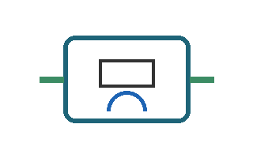
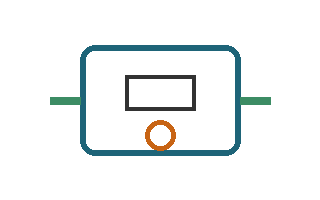

Prepaid smart metering
Give residents visibility of electricity use and help your accounts team manage unit-wise readings, prepaid balances and billing from a connected metering system.
Explore solutionOUR SOLUTIONS
Explore each service for its scope, equipment and enquiry options.
Give residents visibility of electricity use and help your accounts team manage unit-wise readings, prepaid balances and billing from a connected metering system.
Explore solution
Bring flat-wise or zone-wise water readings into one place. Automatic meter reading helps societies understand consumption and prepare bills with fewer manual reading visits.
Explore solution
Collect gas-consumption readings remotely and organise them by connection for reporting and billing. The proposed metering arrangement is assessed against the gas supplier's requirements and the existing installation.
Explore solution
Give facility operators a central view of supported building equipment. A BMS can bring AHU controls and compatible equipment-status signals into a structured operator interface.
Explore solution
Plan surveillance around the areas you need to observe: entry gates, lifts, parking, lobbies and common spaces. Camera placement and recording design work together to make footage useful when it is needed.
Explore solution
Build an organised fibre backbone from the equipment room to individual premises. Coller supports passive fibre design, GPON equipment integration and structured cabling for building connectivity.
Explore solution
Bring electrical panels, equipment signals and agreed control functions into a coordinated system. Scope is developed around the site's distribution arrangement and operating sequence.
Explore solution
Organise vehicle entry and pedestrian access around the way your property operates. Select barriers, RFID access and parking information functions to suit the gate layout and traffic pattern.
Explore solution
Monitor water storage, pumping and distribution from a coordinated control system. SCADA supports facility-level water operations, while individual consumption billing is handled through water metering.
Explore solution
Manage common-area and street lighting around operating hours and the selected control equipment. Options can include group switching, individual light control and supported dimming or energy monitoring.
Explore solution
Create a central workspace where operators can review agreed building or security systems. The design brings display requirements, operator seating and technical infrastructure together.
Explore solution
Choose charging infrastructure around vehicles, parking duration and the building's available electrical capacity. We help plan AC or DC charging for societies and commercial properties.
Explore solution